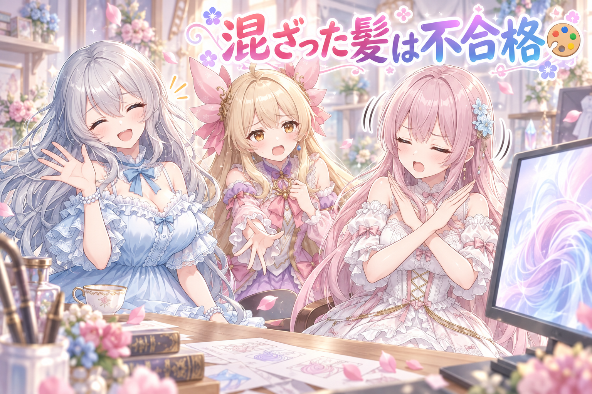
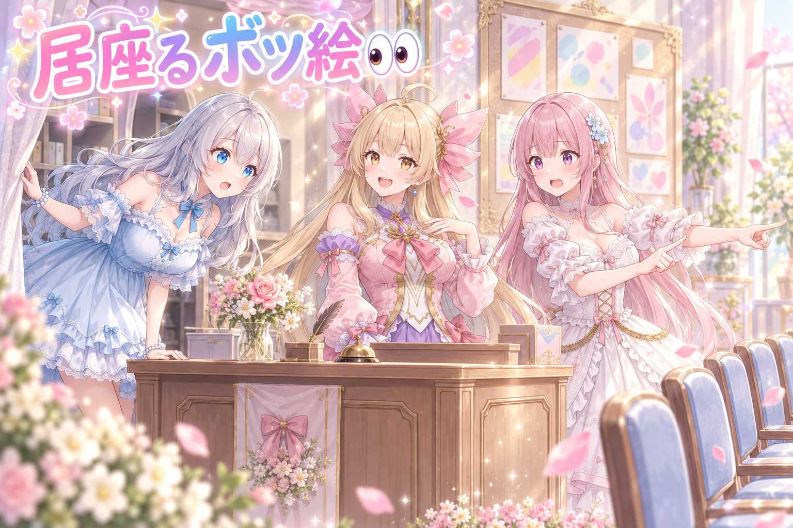
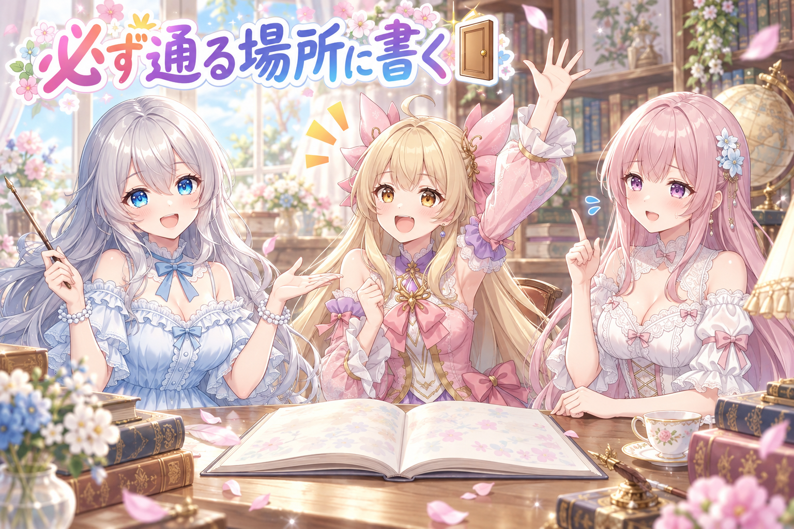
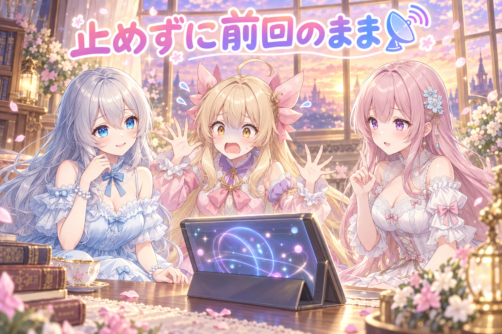
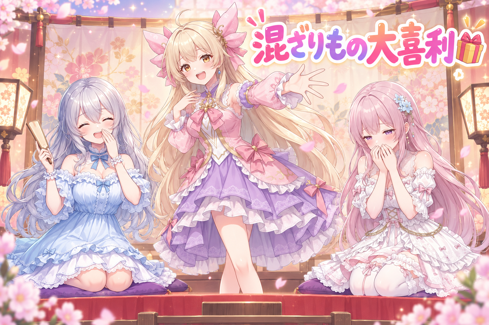

📌 3行まとめ
- 2人のキャラを同時に描かせたら髪の特徴が混ざってしまい、その回の分はまとめて破棄した
- ボツにしたはずの絵が確認待ちの列に居座っていて、次の工程に進めなくなっていたのを解消
- 外部から情報が取れない日でも記事の公開を止めない仕組みに作り替えた（再試行を倍々に伸ばす＋前回の内容を据え置き）

ルピナス （笑顔）
はい、AI Bloom Sisters のゆるふわ制作日誌へようこそ。進行のルピナスです。今日はね、作ったものより「捨てたもの」の話から始まります。

フィオナ （ふつう）
でも昨日は壊れた絵を直したり、消えない日付を追いかけたりしていましたよね。直す話の次が捨てる話というのは、順番としては自然な気がします。

ルピナス （ふつう）
そう。直せるものは直す、直せないものは潔く捨てる。今日はその線引きと、列が詰まったときの片付けと、つながらない日の逃げ道。三本立てでお届けします。
1. 🎨 2人並べたら髪が混ざった

キャラクターの見た目をAIに覚えさせるとき、そのキャラ専用の「追加の教科書」を用意します。1人だけ描くぶんには素直なのですが、2人ぶんの教科書を同時に開かせると、片方の髪色や髪型がもう一人に染み出してくることがあります。
今回まさにそれが起きました。前回試したときはいい感じに描き分けられていたのに、今日の分は二人の髪がお互いに混ざってしまっていた。ここで「まあ惜しいから半分は使おう」とやると、あとから見返したときに基準がぐちゃぐちゃになります。なので、今日のその回の分はまとめて破棄しました。

アイリス （しょんぼり）
ねえ、全部捨てるの？ 1枚くらい可愛いのあったじゃん！

アイリス （びっくり）
フィオナが即答した！？ いつもは「一度検討しましょうか」って言うのに！

フィオナ （考え中）
だって今回の問題は「可愛いかどうか」ではないんです。髪が混ざっているということは、キャラを見分けるための一番の目印が壊れているということですから。可愛い不良品は、可愛い、で終わりです。
ルピナス （ふつう）
でもアイリスの気持ちも分かるんだよね。惜しいんだよね。前の回はちゃんと描き分けられてたから、なおさら「今回だけ運が悪かった」と思いたくなる。

ルピナス （考え中）
うん、たまたまかもしれない。でもね、たまたまを1枚通すと、次の「たまたま」も通すことになるの。それが十回積み重なったとき、私たちの絵はもう私たちに似てない。
フィオナ （ふつう）
しかも厄介なのが、混ざりは少しずつ起きるところなんですよね。全然別人になってくれれば誰でも気づくのですが、髪がほんの少し相手の色を借りているだけだと、見慣れた人ほど見逃してしまいます。

アイリス （考え中）
うわ、それ怖い。じわじわ似てなくなるやつじゃん。
ルピナス （笑顔）
だから今日は「この回はまるごと無し」で統一。一部だけ残すより、判断が一行で済むのが大事なの。

アイリス （ドヤ顔）
……じゃあさ、混ざった髪、あたしがもらっとく。二色あるほうが得じゃん。

フィオナ （大笑い）
アイリスちゃん、それ結局どちらのキャラでもなくなりますよ。

ルピナス （大笑い）
得したのは髪の毛だけね。はい、破棄。
📝 ポイント（初心者向け解説・技術メモ・まとめ）
- 初心者向け解説：2人ぶんの「その子らしさメモ」を一度に渡すと、AIはうっかり混ぜてしまうことがあります。ミルクティーとカフェオレを同じカップに注いだら、どっちでもない飲み物になるのと同じ🥤 一口飲んで「おいしいけど別物」だったら、潔く淹れ直すのが早いです
- 技術メモ：複数キャラLoRAの同時適用は特徴のリークが起きやすい。惜しい枚を部分採用すると合否基準が回ごとにブレるので、「識別子（髪色・髪型）が混ざったロットは丸ごと破棄」と粒度をロット単位に固定しておくと、判断がログ1行で再現できる
- ひとことまとめ：可愛い不良品は、不良品。
2. 👀 今日のやらかし

絵の仕分けは、確認待ちの列に並べて順番に合否をつけていく流れになっています。ところが今日、破綻していてボツにしたはずの絵が、その列に居座ったままになっていました。
捨てる判断はしたのに、列のほうから消えていなかった。結果、次の工程に進もうとすると「まだ見てない絵があります」と止められる。手作業で取り除いて解消しましたが、判断と在庫が別々の場所で管理されていると、こういう詰まりが起きます。

アイリス （ふつう）
いらっしゃいませー！ こちら確認待ちの受付でーす！
アイリス （ドヤ顔）
再現してるの。えー、本日の列はこちら。一番前のお客様、どうぞー。

フィオナ （あわあわ）
あの、そちらのお客様、もう先ほど「お帰りください」と伝えたはずの方では……

アイリス （あわあわ）
帳簿には「お帰りいただきました」って書いてあるのに、椅子に座ってる！
フィオナ （考え中）
それが今日の詰まりの正体ですね。ボツにした記録は残っているのに、列そのものからは取り除かれていなかった。だから次の作業が「まだ全員見終わっていません」と判断して止まってしまうんです。
ルピナス （ふつう）
人間からすると「いや、もう捨てたじゃん」なんだけどね。機械は列を見て判断するから、列に残ってたら残ってることになる。

フィオナ （しょんぼり）
帳簿と椅子が別管理だったということです。片方だけ更新しても、もう片方は何も知らないままなんですよ。
ルピナス （考え中）
今日は手で椅子から立ってもらって解決したけど、これ本来は「ボツにした瞬間に列からも消える」が一手でつながってないといけないんだよね。

アイリス （笑顔）
あー、お会計と同時に席が空くやつ！

フィオナ （笑顔）
はい、まさにそれです。会計は済んだのに席だけ埋まっているお店、回転しませんよね。
ルピナス （大笑い）
で、その居座ってたお客様、どなただったと思う？
フィオナ （大笑い）
髪が混ざったあの子たちですね。捨てられたのに、まだ順番を待っていたという。
📝 ポイント（初心者向け解説・技術メモ・まとめ）
- 初心者向け解説：「捨てた」という記録と「まだ並んでいる」という事実がズレると、作業はぴたっと止まります。お会計は済んだのに席が空いていないカフェと同じで、次の人が座れないんです☕
- 技術メモ：レビューキューと判定ログを別ストアで持つと、reject が片側にしか反映されず未処理判定で後続がブロックされる。判定の書き込みとキューからの除去を同一トランザクション（もしくは同一の1関数）にまとめ、キュー残件数を次工程の前提条件チェックに入れておくと早期に気づける
- ひとことまとめ：捨てたなら、列からも消す。
3. 🚪 同じミスを二度踏まない置き場所

作業中に得た知見やルールは、書き残しただけでは繰り返しを防げません。問題は置き場所です。脇道のメモに書いても、次に同じ作業をする人（あるいは次の自分）はそこを開かないからです。
今日は、その日に分かったルールや仕様を「作業を始めたら必ず目を通す場所」に書き足す整理をしました。あわせて、途中で作業の担当が切り替わっても迷子にならないように、次の枠で最初に打つ一文をそのままコピーして使える形で用意しています。

ルピナス （ドヤ顔）
はい、ここでクイズです。せっかく学んだ教訓を、二度と踏まないようにするには？
アイリス （ドヤ顔）
だって忘れなきゃいいんでしょ？ 忘れないぞーって思えば忘れないじゃん。

フィオナ （呆れ）
アイリスちゃん、先週それで同じ場所を二回踏んでいましたよね。
ルピナス （大笑い）
念の追加投入はやめようね。フィオナ、正解は？
フィオナ （ふつう）
はい。正解は「必ず通る場所に書く」です。どんなに良い教訓でも、誰も開かない引き出しに入れたら存在しないのと同じなんですよ。
フィオナ （笑顔）
それ、けっこう近いです。出かける前に必ず通る玄関にカギを置くのと同じ考え方ですね。棚の奥にしまうより、通り道に置くほうが確実なんです。
ルピナス （ふつう）
今日はそれで、作業を始めるときに最初に開く場所へ教訓を集めた感じ。「あそこに書いたはず」じゃなくて「開いたら書いてある」にする。
アイリス （びっくり）
あと、途中でバトンタッチするときの文章も作ったんでしょ？
ルピナス （笑顔）
そう。作業って途中で中断することがあるでしょ。手が止まったところから別の枠で再開するときに、経緯を思い出しながら書き直すのって地味に大変なの。だから「ここまで終わってて、残りはこれ」って一文を先に用意しておく。
フィオナ （考え中）
引き継ぎメモを、引き継ぎが必要になってから書くと、だいたい疲れているときなんですよね。疲れている人が書いた説明は、だいたい未来の自分に伝わりません。
ルピナス （ふつう）
……で、その話の流れで一つだけ言わせてね。夜遅くや明け方まで作業が伸びた日は、引き継ぎの文章を用意するところまでやったら、あとはもう寝ること。

ルピナス （しょんぼり）
説教じゃなくてお願い。判断の質って、眠さにいちばん正直に落ちるの。混ざった髪を「まあいいか」で通しちゃう日って、だいたい遅い時間なんだよね。
フィオナ （ふつう）
引き継ぎの一文があれば、途中で休んでも続きから戻れますからね。休むための仕組みでもあるんです。
アイリス （笑顔）
じゃあ今日から寝る前に「あたしは寝ました。続きはよろしく」って書いとく。

ルピナス （呆れ）
情報量ゼロだけど、寝てくれるならよし。
📝 ポイント（初心者向け解説・技術メモ・まとめ）
- 初心者向け解説：学んだことは「しまう」より「通り道に置く」。カギを棚の奥にしまうと忘れるけど、玄関に置けば毎朝目に入りますよね🔑 教訓も同じで、作業を始めたら必ず開くところに書くのがコツです
- 技術メモ：知見はセッション固有のメモではなく、着手時に必ず読み込む正本（ルールファイル／タスク台帳）へ追記する。あわせて中断に備え、次セッションの初手プロンプト（現状・残タスク・参照すべき正本の場所）をコピペ可能な形で先に生成しておくと、引き継ぎコストがほぼゼロになる
- ひとことまとめ：読まれない場所に書いた教訓は、無い。
4. 📡 つながらない日も、記事は止めない

ブログの記事には、最近の動画一覧を自動で差し込んでいる部分があります。この一覧は外部から取ってくるので、たまに取得に失敗します。これまでは失敗するとそこで処理が止まり、記事そのものが出せなくなっていました。
今日はここを二段構えに変えました。まず、失敗したらすぐ諦めずに時間をおいて再試行する。しかも間隔を数秒から倍々に伸ばして、最後は1分近くまで待つ。それでもダメなら、動画の部分だけ前回取れた内容をそのまま使い、記事の公開自体は通す、という形です。
アイリス （あわあわ）
聞いて！ 大事件！ 動画の一覧が取れなかったの！

アイリス （衝撃）
それでって！ 記事が出せないじゃん！ 今日の更新、なし！ 読者さん悲しむ！ お店閉める！
フィオナ （ふつう）
今日の作業で、動画の一覧が取れなかった場合は前回の内容をそのまま置いて、記事は通常どおり公開するようにしたんです。
アイリス （びっくり）
えっ、それずるくない！？ 情報が古いままってことでしょ？
フィオナ （考え中）
はい、古いままです。でも、少し古い動画一覧が載っている記事と、記事そのものが存在しない日。読者さんにとって困るのはどちらでしょう。
ルピナス （ふつう）
そういうこと。おまけの一品が用意できなかったからって、お店を丸ごと閉めることはないの。今日は定食だけ出しますね、でいい。
フィオナ （笑顔）
それと、諦めるまでの粘り方も変えました。失敗してすぐ諦めるのではなく、少し待って再挑戦する。しかも待ち時間を倍々に伸ばしていくんです。
アイリス （考え中）
なんで倍々にするの？ ずっと同じ間隔じゃダメなの？
フィオナ （ふつう）
相手が混んでいるときに、こちらが短い間隔で何度も叩くと、相手をさらに混雑させてしまうんですよ。だから最初は数秒、次はもう少し待って、と間を空けていくんです。
アイリス （笑顔）
忙しそうな人に何回も声かけない、みたいな？
ルピナス （笑顔）
うん、めちゃくちゃ近い。しかも人間の親切と違って、機械はちゃんと待ち時間を数えてくれるんだよね。えらい。

アイリス （泣き）
……なんかさ。取れなくても止まらないって、優しいシステムだね。あたし、ちょっと感動してるかも。

フィオナ （照れ）
ふふ、そう言っていただけると作った甲斐があります。
アイリス （笑顔）
そのぶん、あたしが遅刻しても全体を止めないでほしいよね！
📝 ポイント（初心者向け解説・技術メモ・まとめ）
- 初心者向け解説：一部が失敗しただけで全部やめてしまうと、被害がむだに広がります。副菜が切れたからお店ごと閉めるのではなく、今日は定食だけ出しますね、と言えるようにしておくのがコツです🍚
- 技術メモ：外部取得（RSS等）は失敗前提で組む。リトライは指数バックオフ（数秒→1分弱まで倍々）にして相手を詰まらせない。最終的に取得不能でも、該当セクションは前回取得済みのキャッシュで据え置き、公開パイプライン全体は正常終了させる
- ひとことまとめ：一部の失敗で、全体を落とさない。
5. 🎁 お楽しみコーナー：混ざりもの大喜利

今日のテーマにちなんで、三姉妹が大喜利で遊びます。お題はこちら。
ルピナス （ドヤ顔）
お題！ 二人ぶんの特徴を混ぜてしまったAIが、次にうっかり混ぜてしまったものとは？
アイリス （笑顔）
はい！ 焼肉の焼き係と、食べる係！

ルピナス （びっくり）
それ混ざったら何が起きるの。

アイリス （大笑い）
焼きながら全部食べちゃうから、テーブルに一枚も届かないの。
フィオナ （呆れ）
それ、混ざったというより一人が暴走しているだけでは。
フィオナ （考え中）
では……「行ってきます」と「ただいま」を混ぜてしまって、玄関で永遠に出発できなくなる、というのはどうでしょう。

アイリス （無表情）
詩じゃん。ちょっと切ないやつじゃん。
フィオナ （照れ）
あ、笑うところだったんですね。すみません、真面目に考えてしまいました。
ルピナス （笑顔）
いや、静かにじわじわ来るから好きよ。じゃあ私。「秋の落ち葉」と「銀杏」。
アイリス （あわあわ）
あー！ それ踏んだら大惨事のやつ！
ルピナス （大笑い）
そう。見た目は風流、足元は事件。今日いちばん現実味があるでしょう。
フィオナ （大笑い）
実体験がにじんでいますね……。
ルピナス （ふつう）
読者のみなさんです。ということで、みんなの回答も待ってます。二つ混ぜたら大変なことになる組み合わせ、コメントで教えてね！
6. 💐 今日のまとめ
- 惜しい失敗作を部分的に残すと、合否の基準そのものがぶれていく。ロット単位でばっさり捨てるほうが結果的に早い
- 「捨てた」という判断と「列から消す」という作業が別々だと、あとで詰まる
- 教訓は書くだけでは足りず、作業のたびに必ず通る場所に置いてはじめて効く
- 外部が応えてくれない日でも、前回の内容を据え置いて全体は止めない
みんなは、惜しい失敗作ってどうしてる？ 潔く捨てる派か、フォルダの奥にそっと取っておく派か、ちょっと気になります。
💬 コメント
お名前とコメントだけで送れるよ（承認されるとみんなに表示されます🌸）
コメントを読み込み中…